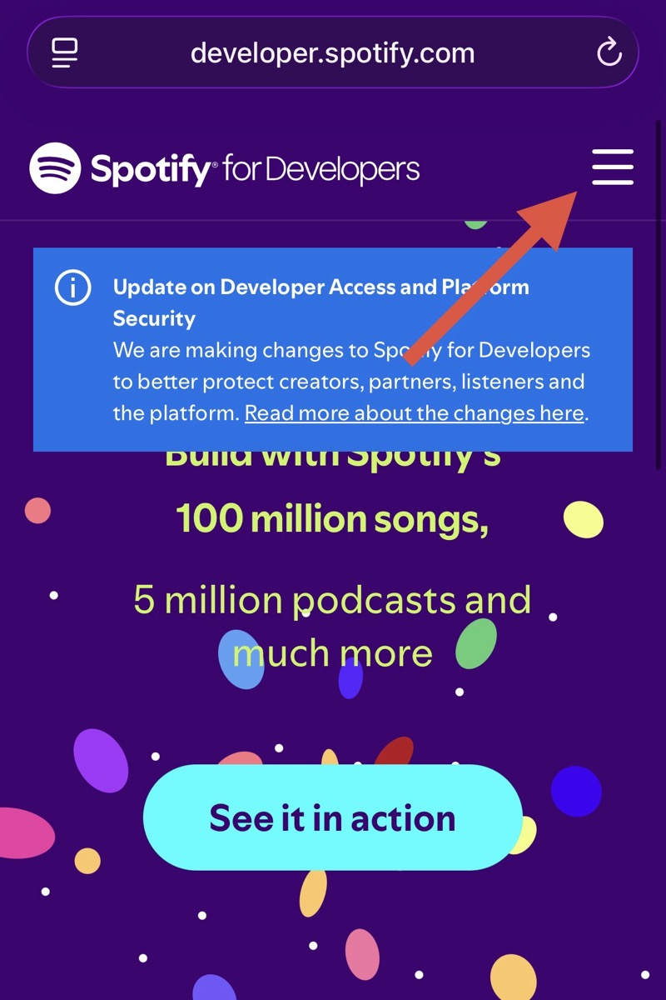
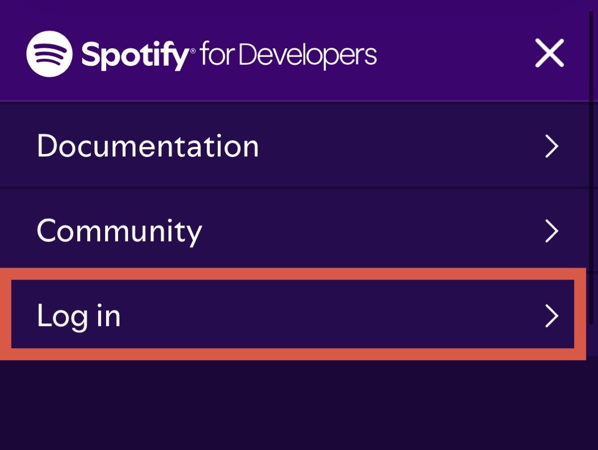
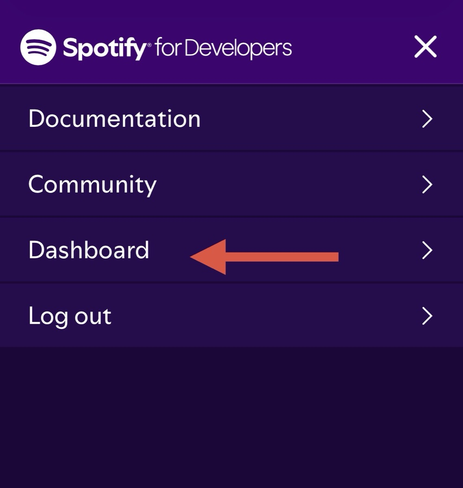
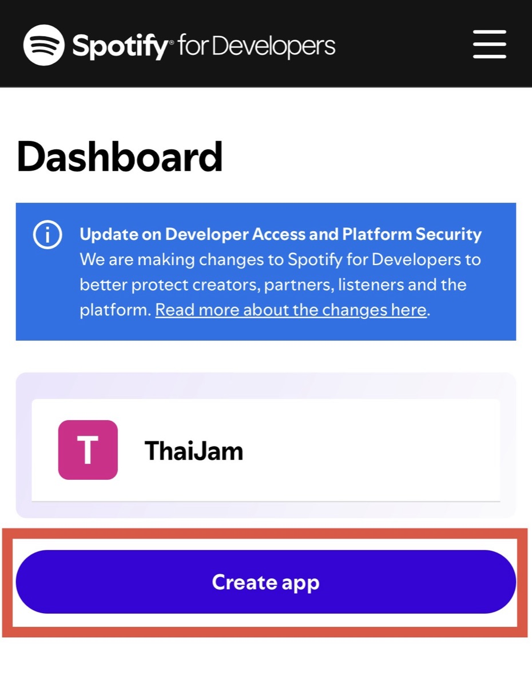
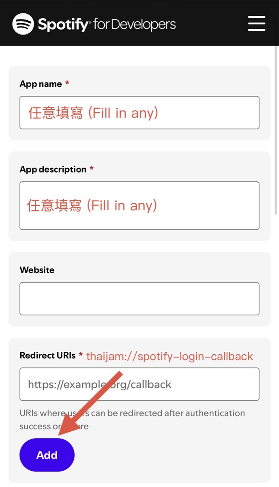
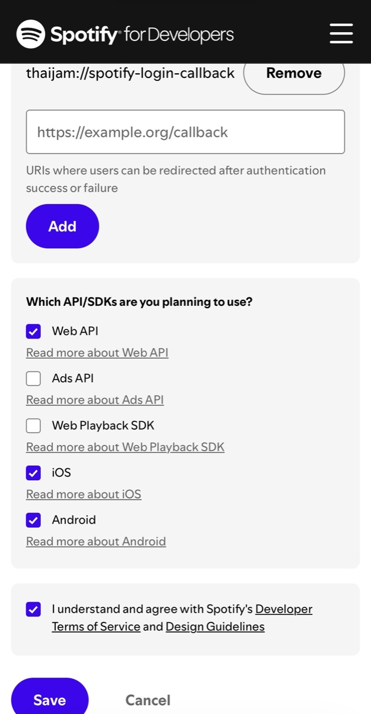
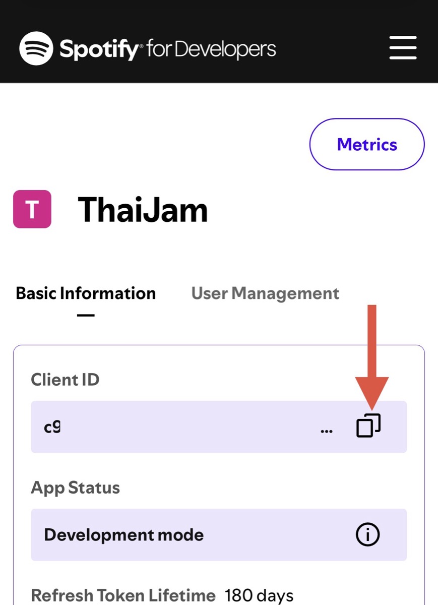

1
登入並進入 Dashboard
前往 Spotify for Developers。若選單顯示 Log in，請先登入 Spotify；登入後再次開啟右上角選單，點 Dashboard。



2
若出現條款，先完成同意
第一次使用 Spotify for Developers 時，可能會要求你同意開發者條款。勾選同意後按 Accept the terms。
這個畫面不是每次都會出現。如果你已經同意過、直接看見 Dashboard，就跳到下一步。
3
建立 Spotify App
在 Dashboard 點 Create app。App name 與 App description 可以自行填寫，Website 可以留空。

4
填入 Redirect URI
在 Redirect URIs 完整輸入下方網址。大小寫、符號與路徑都必須完全一致，輸入後務必按 Add。
thaijam://spotify-login-callback
5
勾選 API／SDK 並儲存
在 Which API/SDKs are you planning to use? 勾選以下三項，勾選同意 Spotify 開發者條款後，再按最下方的 Save。
- Web API
- iOS
- Android

6
複製 Client ID
回到 App 的 Basic Information，點 Client ID 右側的複製圖示。
請確認複製的是 Client ID，不是 Client Secret。Client Secret 不需要貼入 ThaiJam，也不要傳給其他人。

7
回 ThaiJam 完成連結
開啟 ThaiJam，依序前往：
- 設定 → Spotify
- 貼上剛才複製的 Client ID
- 點「儲存」
- 點「連結 Spotify」，依畫面完成 Spotify 授權
完成後即可回到 ThaiJam 搜尋並連結 Spotify 曲目。Spotify 負責播放音訊；ThaiJam 顯示歌詞並同步播放位置。